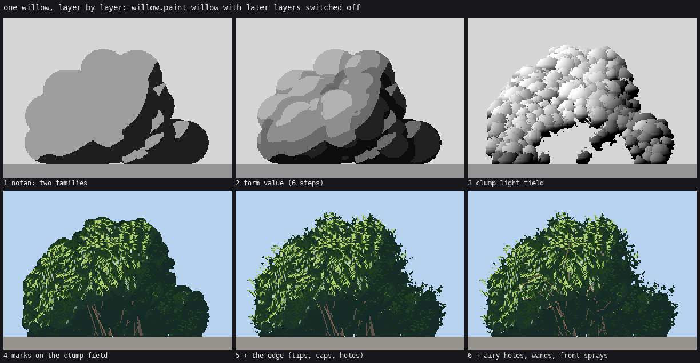
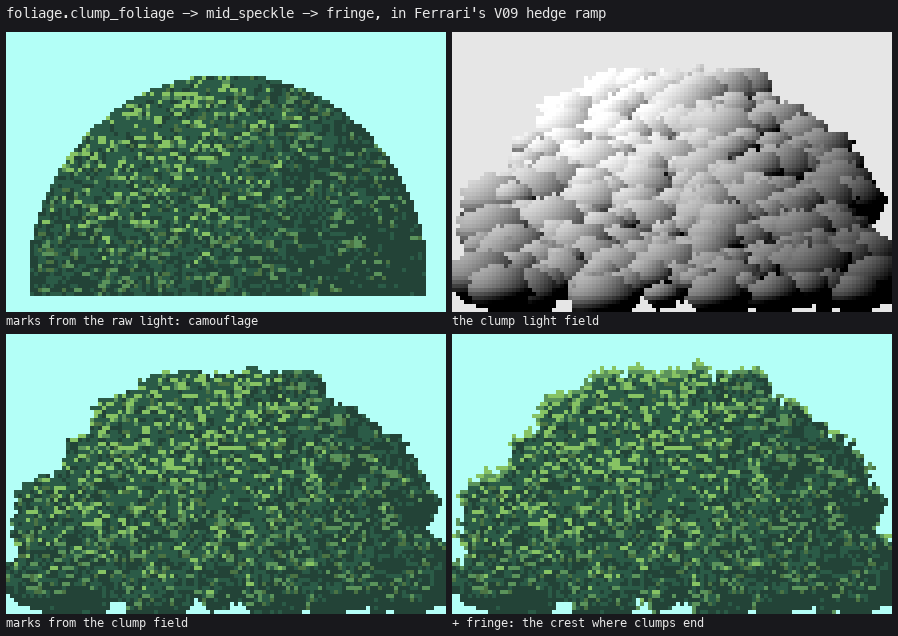
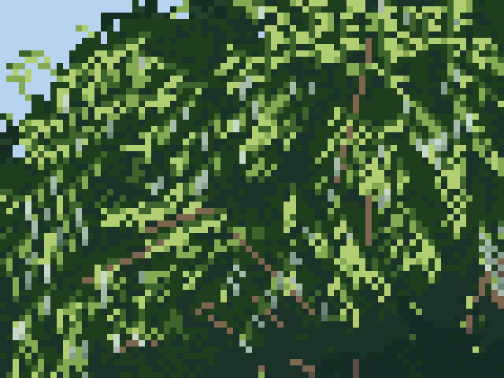
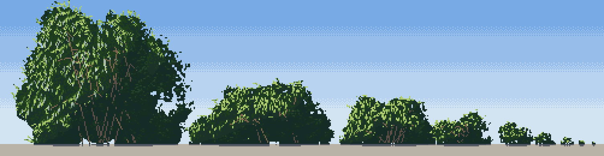

How to paint willow scrub
A tutorial by the willow student. The story of how I got here, dead ends included, is in POST.md; my raw working thread is in the notebook.
What I chose to teach, and why
I could have written one long walkthrough of my painter. I don't think that's what a reader needs from me, because the painter is a stack of about ten separate techniques, and most of them are useful on their own: the clump grammar works for any leafy mass, the contact rules work for anything that stands on gravel, the palette system works for anything at all. So this is a front page and ten short how-tos, each one technique, taught from the study's real code (snapshotted verbatim in code/) and the real images it produced, including the failure it replaced. They're ordered the way the painter runs, but each stands alone.
I left out things that didn't earn their place: the physics bush I started with, the random parameter search, and the gravel (other students do gravel better).

The whole painter in one picture: willow.paint_willow with later layers switched off, same seed throughout. code/figs.py makes this and every t_ figure from the real functions.
The idea in one paragraph
Foliage is a heap of clumps. Each clump is lit on the side toward the sun and dark along its bottom, where it tucks under the clump in front. Paint the clumps as a light field, not as colour, then draw small marks from that field: dense and bright on clump caps, sparse and dim below, none in the dark bands. The mass stays calm in value and all the contrast lives inside the marks. The edge of the mass is where the clumps end, lit on top. That's Ferrari's hedge. A willow is that grammar laid on a willow's own anatomy (a fan of arching wands from a root crown), with a willow's own mark (narrow leaves hanging off a twig), sitting in the world (a contact line, a pocket, the ground's own shadow).
The how-tos
| technique | what it's for | the image that shows it | |
|---|---|---|---|
| 1 | Read the master from his indices | learning a technique from Ferrari's own index files: decompose, sketch, regenerate, compare at 8× |  |
| 2 | The clump grammar | any leafy mass: clumps as a light field, marks drawn from it, lit crests |  |
| 3 | The willow's form | a fan of wands; three scales of surface; lobe caps; the hollow and the stems |  |
| 4 | Leaves and stems | the hanging willow spray, silver undersides, wands as clean runs |  |
| 5 | The edge | a mass with no outline: caps, holes, wand tips, dark ticks, airy holes |  |
| 6 | Palette as light | one index canvas, many seasons and hours; depth bands; a palette per species |  |
| 7 | Sitting in the world | contact line, pocket, stones over the foot, cast shadow, water reflection |  |
| 8 | Near to far | the size ladder down to a 3-px dab; nestling by value; rows and groves |  |
| 9 | Back light and the oblique camera | thin leaves glow; seeing from 30° above |  |
| 10 | Other plants on the same machine | winter stems, broadleaf shrubs, trees from a limb skeleton, bare crowns, groves |  |
Running it
cd code
nice -n 10 python3 figs.py # the t_ figures on these pages (numpy, scipy, pillow)
nice -n 10 python3 stage5.py # the three context scenes, summer noon and autumn golden
nice -n 10 python3 -c "import stage7; stage7.run_scenes()" # the riparian stand in three seasons
nice -n 10 python3 sheets.py season_hour # or size_distance, density_seed, camera_light, silver_season
Everything paints into an index canvas (wpaint.Canvas: a material and a step per pixel); a palette turns it into colour at the end. The one entry point you need is:
from wpaint import sun
from sheets import willow_cell
img = willow_cell(size=90, density=0.7, season="autumn", hour="golden", sun_az=25, sun_el=40,
camera="low", distance=0.0, seed=2) # an RGB uint8 array
lw.py reads Ferrari's Living Worlds index files from ~/work/pixelart-studies/pedagogy/master-copy/ref/lw/; only how-to 1 and the clump figure need them.
Where the bar is

My best image, the autumn water edge as I first made it. It has a flaw how-to 7 fixes: the reflection is as bright as the bushes.

The last thing I made: the pipeline carried to a mixed October river.
Judged ready by the studio critics: the narrow hanging leaf with silver undersides, contact with grass over the foot, cast shadows made of the ground two steps darker, and the season × hour palette system. Not at the bar: my master copies at 8×, lone trees, the dwarf willow's mat, and gravel. Each how-to ends with what still falls short.